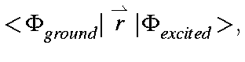
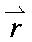
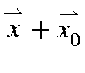
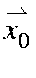
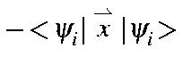

The intensity of a UV-Visible absorption band is a function of the oscillator strength and of the energy of the absorption band. Both quantities are printed when a C.I. calculation is done, and MECI is used. In the output, the oscillator strength, equation 1, in (electron-Angstroms) is printed under the heading "POLARIZATION". This quantity is either zero or obligate positive, as it is calculated from the square root of the square of the oscillator. If the State is non-degenerate, then the "square root of the square" step could be omitted, but if the State is degenerate, the oscillator is the square root of the sum of squares of the oscillators for each component of the State, i.e., it is the scalar of the vector of orthogonal oscillators.
Absorption intensity is proportional to the energy of the transition and to the square of the oscillator strength, i.e., the absorption intensity is proportional to: ν[(μx)2 + (μy)2 + (μz)2].
Theory
A system can go from the ground state to an excited state as the result of the absorption of a photon. The probability of this happening, κ, is given (Wilson Decius and Cross, "Molecular Vibrations", p 163, McGraw-Hill (1955)) in terms of the oscillator integral:
1
In order to evaluate 1, a property of integrals of the type:
The starting point for evaluating 1 is to calculate the molecular
orbital oscillator:
The operator

can be expanded into three terms:
The zero or origin of the position operators is not immediately obvious.
In general it would not be the origin of the Cartesian coordinate
system used. The origin of the position operator would depend on the
individual M.O. and would be defined so that:
To determine the origin, the position operators are replaced by
,
where

is the distance from the origin of the Cartesian
coordinate system used to the origin of the position operator. Then:
The integrals over molecular orbitals are evaluated by first calculating 